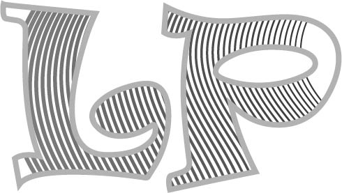
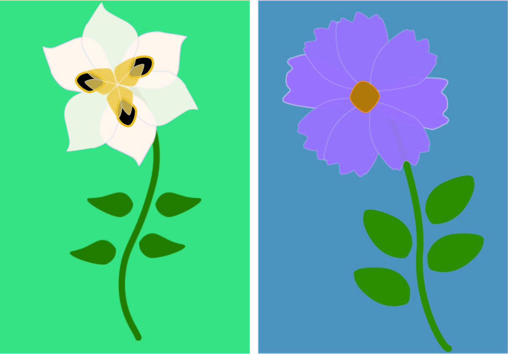
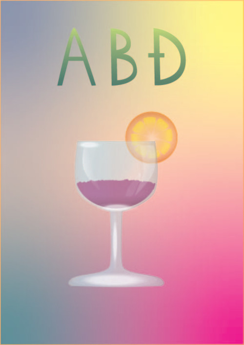
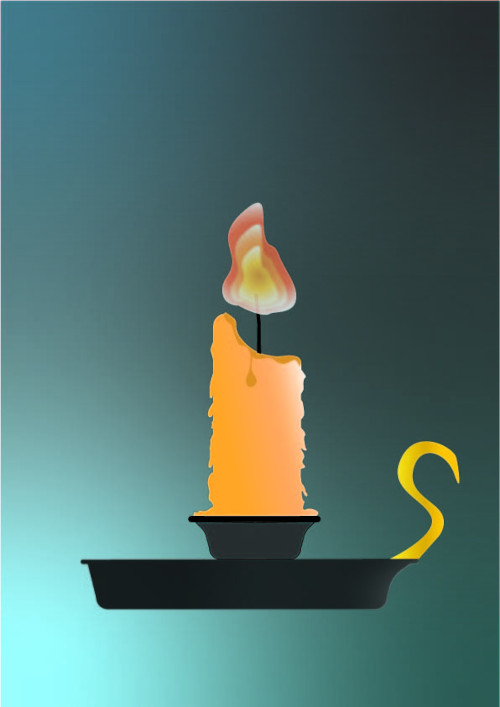
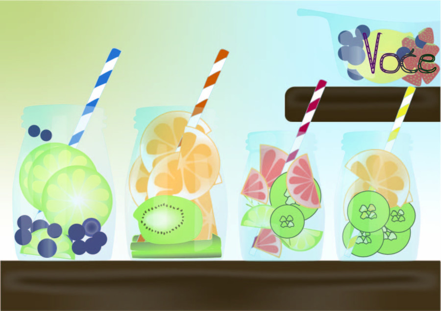
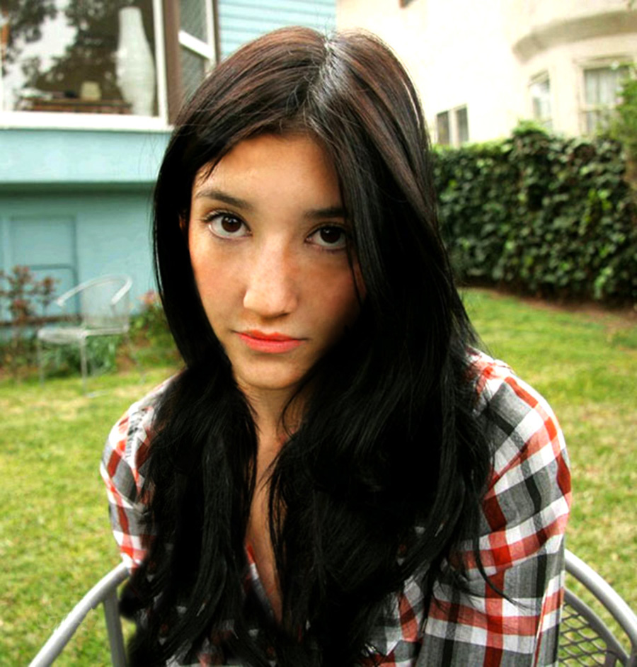
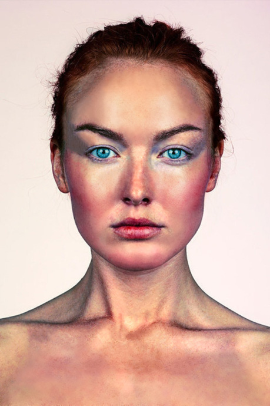
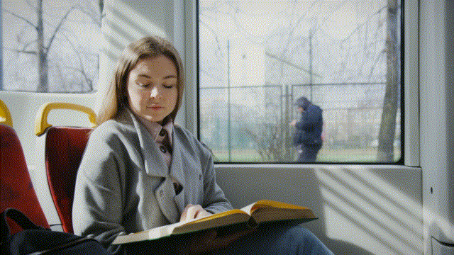

Vektorska grafika
Vektorska grafika koristi matematički definirane oblike, nazvane vektori, za predstavljanje slika. Oštre linije i konture omogućuju visoku preciznost i beskonačno skaliranje bez gubitka kvalitete. Datoteke su male jer se čuvaju samo matematički podaci o oblicima i bojama. Vektorski objekti su lako uredivi i prilagodljivi, što ih čini idealnima za dizajn logotipa, ilustracija i drugih grafika. Programi poput Adobe Illustratora i Inkscapea omogućuju izradu i uređivanje vektorske grafike u raznim područjima kao što su dizajn, inženjering, i animacija.
Vježba 1. - Font
Fontovi su ključni element grafičkog dizajna i tipografije, igrajući vitalnu ulogu u vizuelnom izrazu i komunikaciji. Proces izrade fonta započinje s konceptom i dizajnom, često kroz ručne skice koje se digitaliziraju i pretvaraju u vektorske oblike. Ovi oblici se potom uređuju i fino podešavaju u specijalizovanom softveru kao što su FontForge i Fontographer. FontForge je besplatan i otvorenog koda, omogućujući kreiranje i uređivanje fontova u raznim formatima kao što su TrueType i OpenType. S druge strane, Fontographer, komercijalni alat, nudi intuitivan interfejs i moćne opcije za profesionalce. U oba alata, dizajneri mogu prilagoditi razmak između slova, opći razmak, i hinting za optimalan prikaz na različitim ekranima. Nakon završnih podešavanja, font se eksportuje u odgovarajuće formate, spreman za upotrebu u raznim dizajnerskim projektima, od tiskarskih materijala do digitalnih medija.

Vježba 2. - Bezierova krivulja, precizno crtanje
U ovoj vježbi smo u Adobe Illustratoru kreirali precizne Bezierove krivulje pomoću Pen Tool alata, pažljivo poravnavajući točke prema mreži koordinatnog sustava. Svakoj krivulji smo definirali odgovarajuću boju i debljinu obruba kako bi bile vizualno istaknute. Nakon što smo postavili osnovne krivulje, koristili smo opciju "Blend" kako bismo interpolirali krivulje i stvorili glatki prijelaz između njih. Sljedeći korak uključivao je upotrebu vlastitog fonta iz prethodne vježbe za ispisivanje teksta koji se preklapao s krivuljama. Konvertirali smo tekst u oblike i stvorili masku kako bi tekst bio vidljiv unutar krivulja. Vodili smo računa o veličini i položaju teksta kako bi maska bila što uočljivija. Naposljetku, istaknuli smo da se ovaj postupak može primijeniti i u drugim alatima poput Inkscapea, pružajući slične mogućnosti za stvaranje kompleksnih grafičkih dizajna. Ova vježba nam je omogućila da koristimo precizne tehnike i alate kako bismo stvorili atraktivan dizajn koji se može primijeniti u različitim alatima za vektorsko crtanje.

Vježba 3. - boja, transformacije
U Adobe Illustratoru i Inkscapeu, eksperimentirali smo s bojama i transformacijama na drugoj stranici dokumenta kako bismo demonstrirali različite tehnike. Koristeći alat Pen, nacrtali smo više objekata - konture odabrane slike predloška ili slobodno nacrtane objekte prema vlastitom izboru. Nakon toga, koristili smo tehniku kopiranja s tipkom Alt (Duplicate) kako bismo više puta kopirali oblike. Zatim smo aplikirali drugačije boje na duplicirane oblike koristeći novu Color grupu (Swatch) s barem pet novih boja. Ovo nam je omogućilo da eksperimentiramo s različitim kombinacijama boja i stvorimo raznolike vizualne efekte. Ova vježba nam je pružila priliku da istražimo mogućnosti boja i transformacija u vektorskom dizajnu, koristeći alate i tehnike dostupne u Illustratoru i Inkscapeu.

Vježba 4. - gradijenti, transparencija
U vježbi smo istraživali temu izrade složenih objekata koji se sastoje od više staza korištenjem metoda spajanja poput Unite/Compound path ili oduzimanja oblika s Difference/Subtract. Nadalje, eksperimentirali smo s aplikiranjem različitih vrsta gradijenata, uključujući linearni, radijalni i mesh gradijent, koji su sastavljeni od dvije ili više boja. Ovo nam je omogućilo stvaranje slojevitih i dinamičnih vizualnih efekata. Dodatno, istraživali smo upotrebu transparencije i upravljanje poredkom slojeva u izradi složene grafike. Korištenjem transparencije, postigli smo efekte prozirnosti i preklapanja objekata, dok smo upravljali slojevima kako bismo kontrolirali redoslijed prikaza elemenata na sceni. Ove tehnike smo primijenili i u Adobe Illustratoru i u Inkscapeu, koristeći njihove različite alate i funkcionalnosti kako bismo postigli željene rezultate u dizajnu složenih grafika.
 
Projektni zadatak 1
Cilj prvog projektnog zadatka bio je kreirati vlastiti font koji sadrži slovne znakove za riječ "Voće" koristeći Pen alat. Ovaj font se zatim trebao upotrijebiti u izradi jednostraničnog dokumenta veličine A3 u Adobe Illustratoru ili Inkscapeu, gdje bi se integrirao u sliku iscrtanu pomoću Bezierovih krivulja. Na ovaj način, studenti su trebali demonstrirati tehničke vještine u kreiranju fonta, korištenju gradijenata i preciznom iscrtavanju vektorskih objekata.

Piksel grafika
Piksel grafika sastoji se od mreže piksela koji tvore sliku. Svaki piksel ima svoju boju i poziciju. Za razliku od vektorske grafike, piksel grafika nije beskonačno skalabilna i može izgubiti kvalitetu pri povećanju veličine. Datoteke su obično veće jer sadrže informacije o svakom pikselu. Koristi se za fotografije, ilustracije i web dizajn. Adobe Photoshop je popularan alat za uređivanje piksel grafike.
Vježba 5. - retuširanje
Retuširanje fotografija je proces dotjerivanja slike kako bi se postigla željena kvaliteta i estetika. Adobe Photoshop i GIMP (GNU Image Manipulation Program) su dva popularna alata za retuširanje fotografija. Adobe Photoshop je komercijalni softver koji nudi širok spektar naprednih alata i mogućnosti za retuširanje fotografija. Nudi profesionalne alate za uređivanje boja, korekciju svjetlosti i kontrasta, uklanjanje neželjenih elemenata, kao i napredne tehnike poput kloniranja i maskiranja. Photoshop je često prvi izbor profesionalnih fotografa i dizajnera zbog svoje moći i fleksibilnosti.
 
Vježba 6. - koloriranje
U ovoj vježbi proučavamo tehnike neinvazivnog koloriranja slika, primjenjive na crno-bijele ili slikama u boji koje zahtijevaju promjenu nijanse određenih područja. Korištenjem selekcija stvaramo maske za kontrolirano koloriranje, čime skrivamo ili otkrivamo efekte bojanja. Boje se apliciraju na zasebne slojeve kako bi se sačuvali originalni tonovi i omogućilo lako uređivanje u kasnijim fazama. Ručno izrađene selekcije osiguravaju precizno izdvajanje željenih boja iz pozadine, što direktno utječe na kvalitetu rezultata. Ove tehnike koloriranja primjenjujemo u Adobe Photoshopu, koristeći različite alate i slojeve kako bismo postigli željene efekte bojanja.

Vježba 7. - fotomontaža
U ovoj vježbi istražujemo fotomontažu, proces kombiniranja više fotografija izrezivanjem dijelova različitih slika i spajanjem u jednu cjelinu. Glavni cilj je kvalitetno selektirati dijelove slika koje želimo izrezati kako bi se što bolje uklopili u finalnu sliku. Prolazimo kroz različite tehnike selektiranja, uključujući jednostavne alate za selekciju poligona i oštrog ruba objekata, te složenije tehnike kao što su selekcija putem kanala slike ili crtanje maski brush i eraser alatima u modu quick mask. Također se bavimo izradom i uklapanjem sjena objekata koje smo uvezli, koristeći korekciju boja kako bismo pojačali dojam realističnosti. Sve ove tehnike primjenjujemo u Adobe Photoshopu, koristeći različite alate i slojeve kako bismo postigli željene efekte fotomontaže.

Projektni zadatak 2
Cilj ovog projektnog zadatka je kreirati složenu i koherentnu kompoziciju koristeći tehnike retuširanja, fotomontaže i koloriranja u Adobe Photoshopu ili GIMP-u. Studenti trebaju odabrati baznu fotografiju, retuširati je i integrirati elemente iz drugih fotografija kako bi stvorili novu, jedinstvenu sliku. Uz to, moraju koristiti minimalno tri elementa iz vlastitih fotografija, uključujući jednu na kojoj su oni sami. Važno je koristiti različite alate za selekciju, transformacije i maske, kao i tehnike koloriranja i dodavanja sjena. Sve slojeve i kanale treba logično organizirati i imenovati kako bi se postigla tehnička preciznost i složenost kompozicije.

Video/Web
Adobe Premiere je popularan za video editiranje zbog naprednih alata.
Shotcut je besplatna alternativa s intuitivnim sučeljem, dok je Davinci Resolve moćan alat za naprednije korisnike.
Za izradu web dokumenata, Adobe Dreamweaver je standardni softver.
Notepad++, Atom i Sublime Text su popularni tekstualni uređivači s bogatim značajkama i podrškom za programiranje.
Vježba 8. - cinemagraf
Ova vježba fokusira se na osnove obrade video materijala i uvođenje multimedije u video projekte, s posebnim naglaskom na stvaranje kinemagrafa. Kinemagraf je video isječak čija se sekvenca ponavlja u beskonačnost, obično u GIF formatu, koji spaja pokretnu i statičnu grafiku. U većini slučajeva, veći dio grafike je statičan dok je samo mali dio animiran. U izradi vježbe koristit ćemo Photoshop ili GIMP za obradu statične slike i konačni izvoz, dok ćemo za obradu video isječka koristiti Adobe Premiere ili alternativne programe poput Davinci Resolve ili Shotcut koji imaju slično sučelje kao Premiere. Za zadatak je bilo snimanje vlastitog kratkog videa ili pronalazak besplatnog video isječka na nekoj od stock baza, te njegova obrada kao kinemagraf.

Vježba 9.- video obrada
Tema ove vježbe obuhvaća rezanje i spajanje video isječaka iz više izvora, primjenu različitih video efekata, brisanje i dodavanje zvuka te dodavanje i obradu teksta u video materijalima. Zadatak je izrezati dva video isječka na alternativan način te im dodati barem tri nova efekta poput skaliranja, rotacije ili efekata boja. Nadalje, potrebno je dodati statični i pomični tekst na različite pozicije, uključujući vlastito ime i prezime. Konačno, treba dodati novi zvuk.
Vježba 10. i 11. - web stranica u HTML-u i postavljanje na github
U ovoj vježbi usmjeravamo se prema stvaranju web sadržaja, bitnog elementa multimedijalne prisutnosti na internetu.
Multimedijski sadržaj obuhvaća tekst, slike, video zapise i zvuk, a za kreiranje web stranica koristimo
HTML (Hypertext Markup Language), jezik koji definira strukturu i sadržaj weba.
HTML dokumente pišemo u tekst editorima i spremamo ih kao .html datoteke.
Stilizacija HTML sadržaja definira se pomoću CSS-a (Cascading Style Sheets), što omogućuje određivanje izgleda
elemenata, poput veličine, pozicije, i boje.
Link na web stranicu koju smo postavili na Github: //lorapavlovic.github.io/lora.pavlovic/